حضوري في الرياض
- المدة: 5 أيام
- في مقر معهد مسارتك بالرياض
لا توجد دفعة حضورية مفتوحة حاليًاسجّل في قائمة الانتظار ونبلغك أول ما تُفتح دفعة جديدة.
رسوم الدورة شامل الضريبة1,265
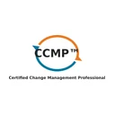
CCMP™شهادة إدارة التغيير الاحترافية – سجّل الآن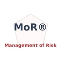
MoR المعتمدةإدارة المخاطر المؤسسية – سجّل الآن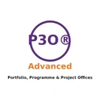
P3O Advancedاحتراف إدارة المحافظ والبرامج – سجّل الآن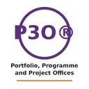
P3O المعتمدةإدارة مكاتب المشاريع PMO – احجز الآن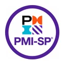
PMI-SPاحتراف جدولة المشاريع – سجّل الآن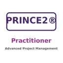
PRINCE2 Practitionerالمستوى المتقدم – ابدأ الآن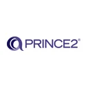
PRINCE2 المعتمدةتأهيل رسمي للاختبار – احجز الآن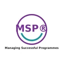
إدارة البرامج الناجحة MSPاحتراف إدارة البرامج والتحول المؤسسي مع معهد م…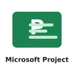
مايكروسوفت بروجكت MS Projectاحتراف تخطيط وجدولة المشاريع مع معهد مسارتك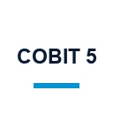
COBIT® 5 Foundationحوكمة تقنية المعلومات – احجز الآن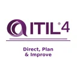
ITIL 4 Direct Plan Improveالتخطيط والتحسين المؤسسي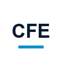
CFE فاحص الاحتيال المعتمد في السعوديةمسارتك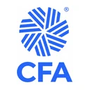
المحلل المالي المعتمد CFAمسارتك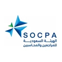
زمالة SOCPAمسارتكدورة MoV برنامج تدريبي من معهد مسارتك للتدريب في الرياض. شهادة MoV Foundation وPractitioner متقاعدتان، وانتهت الاختبارات في 31 ديسمبر 2025. تُقدَّم الدورة حضوريًا في الرياض أو أونلاين مباشر، ومدتها 5 أيام، ورسومها تبدأ من 1,265 ريال شامل الضريبة.
آخر تحديث للمعلومات:
حضوري في مقر منشأتك أو في معهد مسارتك أو أونلاين، بمواعيد تناسب فريقك.
الأهداف، ولمن تناسب، والاختبار والشهادة، في مكان واحد.
Management of Value · مشاريع · برامج · خدمات
هل يمكن أن ينجح المشروع في الوقت والميزانية، ثم يكتشف أصحاب المصلحة أنه لم يحقق ما يحتاجونه فعلًا؟ دورة MoV ترتب لك طريقة التفكير في القيمة: تحديد الاحتياج، تحليل الوظائف، مقارنة البدائل، وتقليل الهدر—مع توضيح صريح أن اختبار MoV الرسمي لم يعد متاحًا منذ نهاية 2025.
MoV Management of Value
هل أسجل في الدورة للحصول على شهادة MoV الرسمية؟
لا. شهادة MoV Foundation وPractitioner متقاعدتان، وانتهت الاختبارات في 31 ديسمبر 2025. سجّل إذا كان هدفك تعلم منهجية إدارة القيمة وتطبيقها، وليس حجز اختبار أو اعتماد جديد لم يعد متاحًا.
الشهادة متقاعدة Foundation وPractitioner
31 ديسمبر 2025 آخر موعد رسمي للاختبارات
تدريب مهني قيمة ومنافع وبدائل
لا بديل واحد المسار الحديث حسب هدفك
قبل التسجيل، هذه هي الأسئلة التي يجب أن تحصل على إجابة واضحة عنها:
هل اختبار MoV ما زال متاحًا؟ ما الفرق بين القيمة وتقليل التكلفة؟ هل أتعلم أدوات عملية لمقارنة البدائل؟ ما المسار الحديث المناسب بعد تقاعد الشهادة؟
راجع الرسوم وطريقة الحضور اتصل على 920014582 اسأل عبر واتساب
دورة MoV من معهد مسارتك تشرح منهجية Management of Value بوصفها طريقة منظمة لتحسين القرارات والنتائج، وليس مجرد محاولة لتخفيض الميزانية.
تتعلم كيف تحدد ما الذي يمثل قيمة حقيقية لأصحاب المصلحة، ثم تحوّل الاحتياجات إلى محركات ومعايير قابلة للمقارنة. بعد ذلك تستخدم تحليل الوظائف ودراسة البدائل لفهم أين تذهب الموارد، وما الذي يحقق منفعة، وما الذي يضيف تكلفة أو تعقيدًا دون أثر كافٍ.
الدورة مفيدة للمشاريع والبرامج والمحافظ والخدمات والعمليات، لكنها لا تُسوّق باعتبارها تأهيلًا لاختبار MoV نشط؛ فقد تقاعدت شهادتا Foundation وPractitioner وانتهى عقد الاختبارات الرسمي في نهاية 2025.
قبل التسجيل: القيمة الحالية للدورة هي تعلم المنهجية وتطبيقها داخل العمل. شهادة حضور المعهد ليست شهادة MoV من PeopleCert، ولا توجد قسيمة اختبار MoV جديدة يمكن حجزها حاليًا.
ابدأ بالاحتياج
حدد ما يريده أصحاب المصلحة فعلًا بدل تنفيذ متطلبات غير مرتبة.
قارن البدائل
وازن بين المنفعة والتكلفة والمخاطر والوقت وجودة النتيجة.
حسّن القيمة
ارفع أثر الحل أو قلل الهدر من دون التضحية بالاحتياج الأساسي.
MoV اختصار لعبارة Management of Value، أي إدارة القيمة. ظهرت كإرشادات تساعد المؤسسات على تعظيم القيمة من المحافظ والبرامج والمشاريع والعمليات والخدمات من خلال فهم الاحتياجات وتحليل الوظائف وتقييم البدائل.
القيمة لا تعني السعر الأقل وحده، ولا الجودة الأعلى بلا حدود. القرار القيمي يبحث عن أفضل توازن بين ما يحتاجه أصحاب المصلحة، والمنافع المتوقعة، والتكلفة الكلية، والمخاطر، والوقت، والموارد المتاحة.
| المفهوم | ما الذي يعنيه؟ | الخطأ الشائع |
|---|---|---|
| Value Drivers | العوامل التي تحدد ما يعتبره أصحاب المصلحة مهمًا وذا قيمة. | الاعتماد على رأي الإدارة وحده دون فهم بقية الأطراف. |
| Function Analysis | تحليل ما الذي يجب أن يفعله المنتج أو المشروع أو الخدمة لتحقيق الاحتياج. | التمسك بالحل الحالي بدل السؤال عن الوظيفة المطلوبة. |
| Value Profile | ترتيب معايير القيمة وأوزانها لتقييم الحلول بصورة أوضح. | مقارنة البدائل بمعيار واحد مثل السعر فقط. |
| Value Study | دراسة منظمة تجمع المعلومات والتحليل وتوليد الأفكار والتقييم والتطوير. | جلسة عصف ذهني بلا بيانات أو معايير أو خطة تنفيذ. |
الإجابة عن سؤال الهوك: تقليل التكلفة قد يخفض القيمة إذا أزال منفعة مهمة أو رفع المخاطر. إدارة القيمة تبحث عن تحسين النتيجة الكلية، لا عن الأرخص تلقائيًا.
وضوح الأولويات
تحويل توقعات أصحاب المصلحة إلى معايير تساعد على اتخاذ القرار.
حلول بديلة
توليد أكثر من طريقة لتحقيق الوظيفة بدل التمسك بالحل الأول.
استخدام أفضل للموارد
معرفة أين تذهب التكلفة وما إذا كانت تحقق منفعة متناسبة معها.
ربط المتطلبات بالقيمة
منع تضخم النطاق بخصائص لا تخدم احتياجًا واضحًا.
مقارنة قابلة للدفاع
دعم الاختيار بمعايير وأوزان وبيانات بدل التفضيلات الشخصية.
تحسين مستمر
مراجعة القيمة عند تغير البيئة أو التكلفة أو احتياجات المستخدمين.
| الموقف | كيف تساعد MoV؟ |
|---|---|
| خيارات متعددة لمشروع واحد | تضع معايير قيمة واضحة وتقارن البدائل على أساس موحد. |
| ميزانية تتضخم | تفحص الوظائف والخصائص لمعرفة ما يمكن تبسيطه دون خسارة الاحتياج. |
| خلاف بين أصحاب المصلحة | تظهر أولويات كل طرف وتبني Value Profile مشتركًا. |
| مشروع يسلم مخرجات بلا منافع | تعيد ربط المخرجات بالاحتياج والنتيجة والقيمة المتوقعة. |
بعد تقاعد الاختبار، لا يكفي أن تُقدَّم الدورة كحفظ لمصطلحات قديمة. التدريب المفيد يجب أن يحول MoV إلى طريقة عمل يمكن استخدامها في مشروع أو خدمة أو مبادرة تحسين.
تطبيق على حالات عملية
تحليل احتياج، بناء Value Profile، مقارنة بدائل، وصياغة خطة تحسين.
فهم لا حفظ
شرح العلاقة بين الوظائف والمنافع والتكلفة والمخاطر والقرار.
أمثلة مؤسسية
تطبيق المفاهيم على المشاريع والعمليات والمنتجات والخدمات.
توجيه لمسار حديث
اختيار PRINCE2 أو MSP أو MoP أو M_o_R وفق نوع مسؤوليتك المهنية.
اسأل قبل الدفع: ما نسبة التطبيق العملي؟ هل ستنفذ Value Study مصغرة؟ هل ستبني مصفوفة مقارنة؟ وهل يوضح المدرب صراحة أن شهادة MoV الرسمية متقاعدة؟
تم اختيار الروابط من ملف دورات مسارتك وفق الصلة المهنية. يجب إعادة فحص HTTP على موقع الاختبار قبل النشر لأن بيئة العمل لم تتمكن من الوصول إلى الدومين.
دورة PRINCE2 لإدارة المشاريع وربط العمل بمبرر المشروع والأهداف والنتائج. عرض الدورة دورة MSP لإدارة البرامج وتحقيق المنافع والقيمة عبر عدة مشاريع مترابطة. عرض الدورة دورة MoP لاختيار وترتيب المشاريع والبرامج على مستوى المحفظة والاستراتيجية. عرض الدورة دورة M_o_R لفهم إدارة المخاطر التي قد تنشئ القيمة أو تهدد تحقيقها. عرض الدورة دورة PMP لبناء أساس شامل في إدارة المشاريع والتكامل والنطاق والموارد والمخاطر. عرض الدورة دورة PfMP لمتخصصي المحافظ ومواءمة الاستثمارات مع الاستراتيجية المؤسسية. عرض الدورة
لا يحتوي الكود القديم على سعر مؤكد مربوط بطريقة الحضور؛ لذلك تستخدم الصفحة الأسعار المبدئية المعتمدة إلى أن يظهر السعر النهائي في نموذج الحجز.
تدريب مباشر مع المدرب حسب الدفعة المتاحة
1,150 ريال سعودي
داخل مقر معهد مسارتك حسب الدفعة المتاحة
1,450 ريال سعودي
المدة والموعد: الموعد يحدد بحسب الدفعات المتاحة، ويجب تأكيد الجدول وعدد الساعات والمخرجات العملية قبل التسجيل.
اشرح لفريق مسارتك نوع عملك والقرار الذي تريد تحسينه: مشروع، برنامج، محفظة، مخاطر، منتج أو عملية. الاختيار الصحيح قد يكون دراسة إدارة القيمة نفسها، أو الانتقال إلى PRINCE2 أو MSP أو MoP أو M_o_R.
دورة MoV بالرياض Management of Value إدارة القيمة تعظيم قيمة المشاريع Value Drivers Function Analysis Value Profile MoV Retired
| الفئة | كيف تستفيد؟ | ما الذي تحتاجه بجانب الدورة؟ |
|---|---|---|
| مديرو المشاريع | ربط النطاق والتكلفة والقرار بالقيمة والمنافع المطلوبة. | أساس إدارة مشاريع وخبرة في قرارات النطاق والتكلفة. |
| مديرو البرامج والمحافظ | تحسين ترتيب المبادرات وتوجيه الموارد نحو النتائج الأعلى قيمة. | MSP أو MoP وفق مستوى المسؤولية. |
| أعضاء PMO | إضافة معايير قيمة إلى البوابات والحوكمة ومراجعات المشاريع. | حوكمة ومؤشرات أداء وإدارة منافع. |
| محللو الأعمال | تحويل الاحتياجات إلى Value Drivers ومقارنة البدائل. | استخراج المتطلبات وتحليل أصحاب المصلحة. |
| مديرو المنتجات والخدمات | تحسين الخصائص والخدمات وفق أثرها على العميل والمؤسسة. | Product Discovery وقياس الاستخدام والنتائج. |
| فرق التحسين والجودة | كشف الهدر وتحسين الوظائف والعمليات دون فقد المنفعة الأساسية. | Lean أو Six Sigma وتحليل العمليات. |
هل تناسب المبتدئ؟ نعم من ناحية المفاهيم، لكن استفادتك تزيد عندما تدخل الدورة بحالة عملية أو مشروع أو خدمة تريد تحسينها، بدل دراسة المصطلحات في فراغ.
MoV لا تنشئ وظيفة مستقلة مضمونة باسم “مدير قيمة”، خصوصًا بعد تقاعد الشهادة. فائدتها أقوى كمهارة داعمة لأدوار موجودة أصلًا في إدارة المشاريع والبرامج والمحافظ والتحليل والتحسين.
| المسمى الوظيفي | كيف تفيده الدورة؟ | مهارات إضافية يحتاجها |
|---|---|---|
| Project Manager | مراجعة قيمة النطاق والبدائل وربط المشروع بمبرر العمل. | PRINCE2 أو PMP، تخطيط، مخاطر، وتواصل. |
| Programme Manager | ربط المخرجات بالمنافع والقيمة عبر مشاريع مترابطة. | MSP، إدارة منافع، حوكمة وتغيير مؤسسي. |
| Portfolio Manager | دعم الاختيار والترتيب وتحسين توزيع الموارد. | MoP أو PfMP، تحليل استثمار، واستراتيجية. |
| PMO Analyst أو Manager | إضافة معايير قيمة إلى الحوكمة والبوابات والتقارير. | لوحات مؤشرات، إدارة محافظ، وقياس منافع. |
| Business Analyst | ربط احتياجات أصحاب المصلحة بوظائف ومعايير قرار. | تحليل متطلبات، نمذجة عمليات وتيسير ورش. |
| Process Improvement Specialist | تحديد الأنشطة والخصائص قليلة القيمة وتحسين البدائل. | Lean Six Sigma، بيانات، وقياس أداء. |
| Product Manager | تقييم الخصائص والخيارات بناءً على أثرها وقيمتها. | أبحاث مستخدمين، Product Analytics واستراتيجية منتج. |
الوضع الحالي: متقاعد
أعلنت PeopleCert تقاعد شهادتي PRINCE2 Value Management (MoV) Foundation وPractitioner. كان آخر يوم لشراء القسائم هو 30 يونيو 2025، وآخر يوم لدخول الاختبارات هو 31 ديسمبر 2025.
بناءً على ذلك، لا يجوز تقديم الدورة في 2026 باعتبارها دورة تؤهلك لحجز اختبار MoV رسمي نشط، ولا يجوز بيع قسيمة أو الوعد بالحصول على اعتماد جديد.
| العنصر | Foundation — التنسيق التاريخي | الوضع الحالي |
|---|---|---|
| عدد الأسئلة | 50 سؤال اختيار من متعدد | لا يوجد اختبار متاح للحجز |
| مدة الاختبار | 40 دقيقة | انتهت نافذة الاختبارات |
| درجة النجاح | 25 من 50 — 50% | معلومة تاريخية فقط |
| الكتاب | Closed Book | لا تستخدمها كوعد امتحاني |
| القسيمة | كانت تُشترى عبر الجهة الامتحانية | توقف شراء القسائم في 30 يونيو 2025 |
| هدفك الحالي | المسار الأقرب | لماذا؟ |
|---|---|---|
| إدارة مشروع وتحقيق مبرر العمل | PRINCE2 Project Management (Version 7) | مسار نشط لإدارة المشاريع وممارساتها وعملياتها وأهدافها. |
| تحقيق منافع التغيير عبر عدة مشاريع | MSP 5th edition | يركز على إدارة البرامج، التوافق الاستراتيجي وتحقيق المنافع. |
| اختيار وترتيب الاستثمارات | MoP | يركز على المحافظ، الأولويات، الموارد وتحقيق القيمة الاستراتيجية. |
| إنشاء القيمة وحمايتها من المخاطر | M_o_R 4 | يربط إدارة المخاطر بالحوكمة وإنشاء القيمة وحمايتها. |
| تحليل الاحتياج والحلول | Business Analysis | مسار مناسب لتحليل أصحاب المصلحة والمتطلبات والبدائل. |
لا يوجد بديل مباشر واحد: اختر المسار حسب مستوى القرار الذي تعمل عليه—مشروع، برنامج، محفظة، مخاطر، أو تحليل أعمال—ولا تنتقل تلقائيًا إلى شهادة لا تخدم مسؤوليتك.
لا توجد دفعات مفتوحة الآن. سجّل في قائمة الانتظار ونبلغك أول ما تُفتح دفعة.
رسوم الاختبار الدولي غير مشمولة في رسوم الدورة ما لم يُذكر ذلك صراحة.
كل ما تحتاجه لشهادتك القادمة في مكان واحد.
الوحدات التي تغطيها دورة MoV بالترتيب.
المحتوى يجمع بين مفاهيم MoV الأساسية وتطبيقها العملي، مع فصل واضح بين دراسة المنهجية وبين الشهادة المتقاعدة.
| المحور | ما الذي تتعلمه؟ | التطبيق المتوقع |
|---|---|---|
| مفهوم القيمة | العلاقة بين الاحتياج والمنفعة والوظيفة والتكلفة والمخاطر والوقت. | تحليل قرار يحقق أقل تكلفة لكنه لا يحقق الاحتياج. |
| أصحاب المصلحة | تحديد الأطراف المؤثرة والمتأثرة وفهم اختلاف تصوراتهم للقيمة. | خريطة أصحاب مصلحة واحتياجات أولية. |
| Value Drivers | استخراج محركات القيمة وتحويلها إلى معايير واضحة. | قائمة محركات مرتبة حسب الأهمية. |
| Value Profile | بناء ملف قيمة يوضح المعايير والأوزان ومستوى الأداء المطلوب. | نموذج تقييم يمكن استخدامه لمقارنة الحلول. |
| Function Analysis | فهم الوظائف الأساسية والثانوية وما يضيف منفعة أو تكلفة. | تحليل وظيفة لمنتج أو خدمة أو مخرج مشروع. |
| MoV Study | مراحل جمع المعلومات والتحليل والإبداع والتقييم والتطوير والتنفيذ. | خطة دراسة قيمة مصغرة بمدخلات ومخرجات واضحة. |
| توليد البدائل | كسر الارتباط بالحل الحالي وتوليد خيارات تحقق الوظيفة بطرق مختلفة. | قائمة بدائل قابلة للتقييم بدل خيار وحيد. |
| Multi-Criteria Analysis | مقارنة البدائل باستخدام معايير مالية وغير مالية وأوزان محددة. | مصفوفة قرار توضح سبب اختيار الحل. |
| تكلفة دورة الحياة | النظر إلى تكلفة التشغيل والصيانة والتغيير وليس تكلفة الشراء فقط. | مقارنة بين تكلفة أولية منخفضة وتكلفة كلية أعلى. |
| خطة تحسين القيمة | تحويل نتائج الدراسة إلى توصيات ومسؤوليات ومؤشرات متابعة. | خطة تنفيذ ومتابعة للقيمة المحققة. |
| دمج إدارة القيمة | ربط MoV بالحوكمة ودورة حياة المشاريع والبرامج والعمليات. | تحديد نقاط إدخال مراجعات القيمة في العمل. |
الإجابة عن سؤال الهوك: الجانب العملي الحقيقي يجب أن ينتج مستندات قرار، مثل Value Profile ومصفوفة مقارنة وخطة تحسين، لا مجرد مراجعة أسئلة اختبار متقاعد.
لا توجد آراء منشورة لهذه الدورة بعد، وهذه آراء متدربين في دورات أخرى لدى معهد مسارتك.
أتممت بحمد الله برنامج الإعداد لشهادة SHRM-CP في إدارة الموارد البشرية المعتمد من SHRM، وذلك عبر معهد مسارتك للتدريب | Masartech for Training Institute كانت تجربة مهنية ثرية عززت فهمي لدور الموارد البشرية كشريك استراتيجي في تحقيق أهداف الأعمال وليس مجرد دور تشغيلي. خلال البرنامج ركزت على: • تخطيط القوى العاملة • إدارة الأداء • علاقات الموظفين • السياسات والإجراءات • تجربة الموظف وثقافة العمل وأستعد — بإذن الله — لدخول الاختبار الاحترافي في أقرب فرصة رحلة التطوير المهني مستمرة… لأن الاحترافية قرار وليست محطة وصول

دورة MoV تشرح منهجية Management of Value، أي إدارة القيمة، وتساعد المتدرب على فهم احتياجات أصحاب المصلحة، تحديد محركات القيمة، تحليل الوظائف، مقارنة البدائل، وتحسين المنفعة مقابل التكلفة والمخاطر.
لا. أعلنت PeopleCert تقاعد شهادتي PRINCE2 Value Management (MoV) Foundation وPractitioner؛ كان آخر موعد لشراء القسائم 30 يونيو 2025، وآخر موعد لدخول الاختبارات 31 ديسمبر 2025.
لا يمكن تقديم الدورة باعتبارها طريقًا لاختبار رسمي متاح حاليًا، لأن نافذة اختبارات MoV انتهت في 31 ديسمبر 2025. قبل التسجيل يجب التعامل معها كتدريب معرفي وتطبيقي على إدارة القيمة، لا كتأهيل لشهادة نشطة.
كان اختبار MoV Foundation يتكون تاريخيًا من 50 سؤال اختيار من متعدد، ومدته 40 دقيقة، ودرجة النجاح 25 من 50، وكان اختبارًا مغلق الكتاب. هذه معلومات تاريخية عن الاختبار المتقاعد وليست تفاصيل حجز حالي.
نعم، يمكن أن تظل مفاهيم إدارة القيمة مفيدة في تحليل الاحتياجات، مقارنة البدائل، تقليل الهدر وتحسين القرارات. لكن قيمة الدورة أصبحت في التطبيق المهني للمفاهيم، وليس في الحصول على اعتماد MoV جديد.
لا يوجد بديل واحد مباشر يطابق MoV بالكامل. اختر حسب هدفك: PRINCE2 Project Management لإدارة المشاريع، MSP لإدارة البرامج وتحقيق المنافع، MoP لتحديد أولويات المحافظ، أو M_o_R لإدارة المخاطر التي تنشئ القيمة وتحميها.
MoV تركز على تعظيم القيمة وتحسين الحلول والبدائل، بينما MoP تركز على إدارة المحافظ واختيار وترتيب المشاريع والبرامج بما يحقق الاستراتيجية ويستخدم الموارد بفاعلية.
يمكن للمبتدئ دراستها، لكن الاستفادة تكون أكبر لمن لديه معرفة أساسية بالمشاريع أو العمليات أو تحليل الأعمال. لا تشترط خبرة تقنية، إلا أن وجود أمثلة عملية من بيئة العمل يساعد على فهم أدوات القيمة.
لا. لا ينبغي اعتبار أي قسيمة اختبار مشمولة، لأن الاختبار الرسمي متقاعد أصلًا. الرسوم تخص تدريب معهد مسارتك وشهادة الحضور وفق سياسة المعهد.
عند عدم وجود سعر مؤكد في صفحة الحجز، السعر المبدئي هو 1,150 ريال للتدريب الأونلاين المباشر و1,450 ريال للحضور في الرياض. السعر النهائي هو السعر الظاهر في نموذج الحجز وقت التسجيل.
المدة وعدد الأيام يحددان بحسب خطة الدفعة ومستوى التطبيقات العملية. يجب تأكيد عدد الساعات والجدول التدريبي قبل إتمام التسجيل.
دورات قريبة من دورة MoV قد تناسب خطوتك التالية.

تأهيل لشهادة CAPM من PMI أونلاين وحضوري بالرياض


شهادة إدارة التغيير الاحترافية – سجّل الآن

تخطيط وإدارة المشاريع باحتراف – سجّل الآن

إدارة المحافظ الاستثمارية – ابدأ الآن

إدارة المخاطر المؤسسية – سجّل الآن
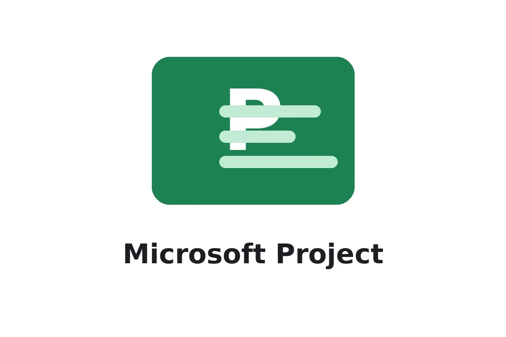
احتراف تخطيط وجدولة المشاريع مع معهد مسارتك

احتراف إدارة البرامج والتحول المؤسسي مع معهد مسارتك

إدارة مكاتب المشاريع PMO – احجز الآن

احتراف إدارة المحافظ والبرامج – سجّل الآن
سجّل في دورة MoV اليوم، أو تواصل معنا ونساعدك تختار الموعد المناسب.